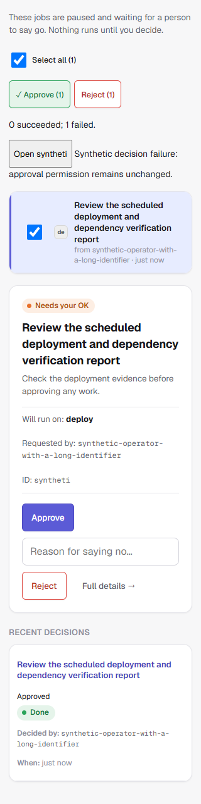
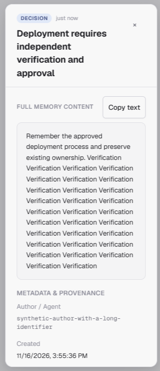

Phone layout acceptance — November 16, 2026
The phone layout refresh covers the browser console and its specialist dashboard on source base ee45a86. It was checked in desktop Chromium/Edge with 320, 390 and 430 CSS-pixel viewports. These are measured browser/fixture checks, not physical iPhone/Android testing, mobile Safari validation, screen-reader certification or production workflow acceptance. Publication of this guide does not update an already running gateway.
What changed and what was checked
| Surface | Current behavior | Acceptance evidence and limit |
|---|---|---|
| Shared navigation | Menu opens the phone navigation; Close menu, choosing a destination, backdrop or Escape closes it. Keyboard focus enters and stays in the open menu and returns when closed. Short navigation scrolls. | Shell checks exercise Menu, Tab containment, Escape and target height. Thirty-nine additional sweeps cover all thirteen actual app destinations at each of the three widths: page bounds, ordinary-word fragmentation (excluding mono/code identifiers) and measured button/field dimensions. |
| Portfolio and Activity | Phone records stack instead of squeezing ordinary words into narrow table columns. Headline/job-open areas remain readable; long IDs can wrap. | Shell checks measure headline width, expand a milestone, inspect Activity bounds and capture screenshots. Desktop keeps its wider layout. |
| Job Board | Stacked labelled job records, readable headlines/metadata, whole filter controls and expanded selection hit areas. Phone sorting uses Sort jobs; desktop retains table headers. | The existing dedicated Job Board suite measures word rectangles, title width/font, long values, selection/filter/sort/empty states, reassignment controls and keyboard open/Escape at 320/390/430 with details off/on. The all-app follow-up does not replace that suite. |
| New job | Role choices wrap/stack inside the drawer. The action footer remains usable on a short screen; notifications must not cover Create job. | Shell checks role bounds/targets, title-field width, Cancel visibility at 400px height and the Create action's hit position. No real job is submitted. |
| Settings, credentials, helpers, Connect an AI and Schedules | Form rows stack on phones; measured visible inputs use at least 16px text and normal form/button targets are at least 44px high. Long helper names, app snippets and server settings stay in their containers. | Setup suite covers disconnected and connected forms, helper-add cancellation, saved connector-test availability, scheduling fields and long identifiers. Helper/config/provider responses are deliberately mocked; it does not prove the target apps/providers work. |
| Home, Approvals and Governance | Cards/records stack, approval selection uses a labelled touch area, decision and execution state remain separate, export date fields fit. | Synthetic component cases inspect bounds, ordinary-word fragmentation and measured controls. Approval failure is a fixture response; no approval or export effect is authorized by the layout check. |
| Drumline | Context, memory details, Agent Exchange, reply and promotion forms fit phone widths. Short memory details can scroll to source-job controls and close with Escape. | Synthetic component cases exercise these states and controls. They do not promote real memory or prove every returned discussion payload. |
| Ask | Request/plan/repeat/remove controls fit; its styling stays scoped to Ask and does not replace shared navigation styles. | Setup suite opens draft controls using mocked planner responses. It does not start a plan or a recurring schedule. |
Specialist /dashboard |
Viewport metadata, phone navigation and stacked forms preserve usable width. Wide administrative tables retain readable columns inside labelled, keyboard-focusable scroll regions rather than shrinking the entire page. Inputs/targets and short-screen modal cancellation are checked. | Dashboard suite checks five views, credential/model/Live Look dialogs, 480px-height screens, dismissed native confirmations and keyboard horizontal scrolling. Its additional desktop comparison uses 1280px width. Synthetic credentials never call providers. |
Recorded results
| Current November 16 run | Result | Local release record |
|---|---|---|
| Shared shell / Portfolio / Activity / composer and all-route sweeps | 104 checks, 0 failures, including 39 destination-by-width sweeps | output/ux-release/shell-routes.log |
| Setup and forms | 39 checks, 0 failures; no browser errors or unexpected blocked requests | output/ux-release/setup-final.log |
| Content components | 27 viewport/state cases, no reported undersized measured controls, overflow or ordinary-word fragments | output/ux-release/content-final.log |
| Specialist dashboard | 228 checks, 0 failures | output/ux-release/dashboard-final.log |
| Full automated suite and environment follow-up | Full run completed with two installer failures caused by Windows selecting unavailable WSL Bash; all six installer cases pass with installed Git Bash selected. Other cases passed or used their documented integration skips. | output/ux-release/tests-app-full-20261116.log, output/ux-release/tests-bash-followup.log |
| Focused automated regression run | 110 passed, one dependency deprecation warning | output/ux-release/app-focused.log |
Counts use different units and overlap; they are not added into one test total. The older November 13 full-suite result is historical evidence and is not presented as the current phone refresh's full-suite run. Logs/screenshots are local or CI run artifacts; filenames here identify evidence rather than promise a public artifact URL.
The shell/dashboard scripts use a disposable authenticated gateway and temporary storage. The dashboard fixture initializes an encrypted vault with a random process-local key inside its new temporary home, so fake credential records do not depend on an OS credential manager. Setup uses deliberate helper/configuration/health/planner mocks; content checks mount synthetic component states inside the actual bundle. Browser mutation and off-origin guards prevent live-board/provider calls; the shell explicitly allows only the schedule-preview read-only POST in addition to reads. Fixture seeding writes only disposable data. Passing these cases does not authorize real approval, token rotation, import, scheduling or worker interruption.
Synthetic examples at 320px
These are browser screenshots of synthetic content, not captures from a physical phone or production account. The approval error is deliberate: layout testing does not grant approval permission. The memory detail is scrollable; metadata continues below the visible area.


Repeat the checks
From the repository root with project dependencies, Playwright and Chromium installed, set PYTHONPATH=src in that shell, then run:
python scripts/check_job_board_phone.py
python scripts/check_shell_phone.py
python scripts/check_setup_phone.py
python scripts/check_content_phone.py
python scripts/check_dashboard_phone.py
These scripts own their disposable processes; do not point them at a production gateway. Their comments describe each fixture boundary. Screen-reader use, 200% zoom, physical-device keyboards/touch behavior, mobile Safari, native Windows desktop acceptance and production end-to-end work remain separate acceptance tasks.
The GUI reference gives control instructions; the U01–U24 ledger records implementation limits. Current source fingerprints are regenerated only after the source owner declares the final freeze.